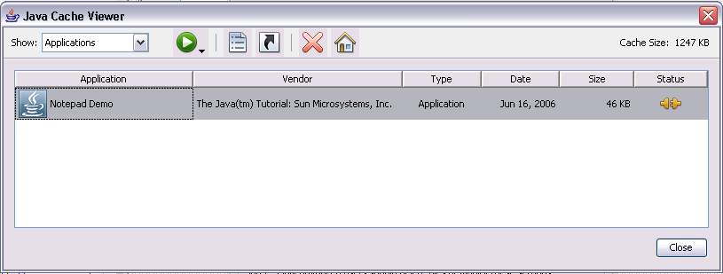

Running a Java Web Start Application
Users can run Java Web Start applications in the following ways:
Note: To run applications deployed with Java Web Start technology, you must have a compatible version of the Java Runtime Environment (JRE) software. The complete Java Standard Edition Development Kit (JDK) is not required.
Java Web Start software loads and runs the application based on instructions
in the JNLP file.
Java Cache Viewer application 
- Running a Java Web Start Application From a Browser
- Running a Java Web Start Application From the Java Cache Viewer
- Running a Java Web Start Application From the Desktop
Note: To run applications deployed with Java Web Start technology, you must have a compatible version of the Java Runtime Environment (JRE) software. The complete Java Standard Edition Development Kit (JDK) is not required.
Running a Java Web Start Application From a Browser
You can run a Java Web Start application from a browser by clicking a link to the application's JNLP file. The following text is an example of a link to a JNLP file.<a href="/some/path/Notepad.jnlp">Launch Notepad Application</a>
Try it now: Run Notepad
Running a Java Web Start Application From the Java Cache Viewer
If you are using at least Java Platform, Standard Edition 6, you can run a Java Web Start application through the Java Cache Viewer.When Java Web Start software first loads an application, information from the application's JNLP file is stored in the local Java Cache Viewer. To launch the application again, you do not need to return to the web page where you first launched it; you can launch it from the Java Cache Viewer.
To open the Java Cache Viewer:
- Open the Control Panel.
- Double click on the Java icon. The Java Control Panel opens.
- Select the General tab.
- Click View. The Java Cache Viewer opens.
The application is listed on the Java Cache Viewer screen.

Running a Java Web Start Application From the Desktop
You can add a desktop shortcut to a Java Web Start application. Select the application in the Java Cache Viewer. Right-click and select Install Shortcuts or click the Install button, .A shortcut is added to the desktop.